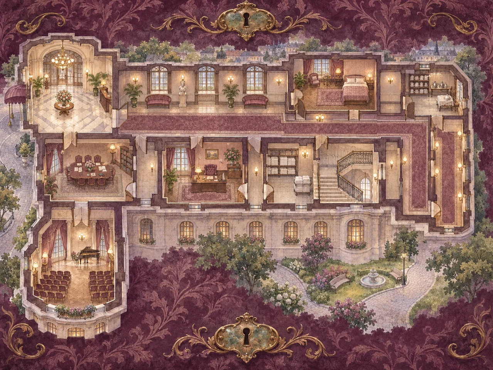
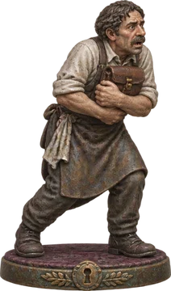

Шестьсот восьмая комната
Карты и фигурки ведущего
Игровой комплект
3 игрока · 4 игрока · 5 игроков · 6 игроков · 7 игроков · 8 игроков
Карта кампании

Поля боя


Герои


Персонажи ведущего


Противники


Испуганный взрослый работник 4Испуганный взрослый работник 2Испуганный взрослый работник 1Испуганный взрослый работник 5Испуганный взрослый работник 3Испуганный взрослый работник 6 Гостиничный охранник 2Гостиничный охранник 6Гостиничный охранник 4Гостиничный охранник 5Гостиничный охранник 3Гостиничный охранник 1
Гостиничный охранник 2Гостиничный охранник 6Гостиничный охранник 4Гостиничный охранник 5Гостиничный охранник 3Гостиничный охранник 1 Возбуждённый взрослый слушатель 1Возбуждённый взрослый слушатель 4Возбуждённый взрослый слушатель 5Возбуждённый взрослый слушатель 3Возбуждённый взрослый слушатель 6Возбуждённый взрослый слушатель 2
Возбуждённый взрослый слушатель 1Возбуждённый взрослый слушатель 4Возбуждённый взрослый слушатель 5Возбуждённый взрослый слушатель 3Возбуждённый взрослый слушатель 6Возбуждённый взрослый слушатель 2